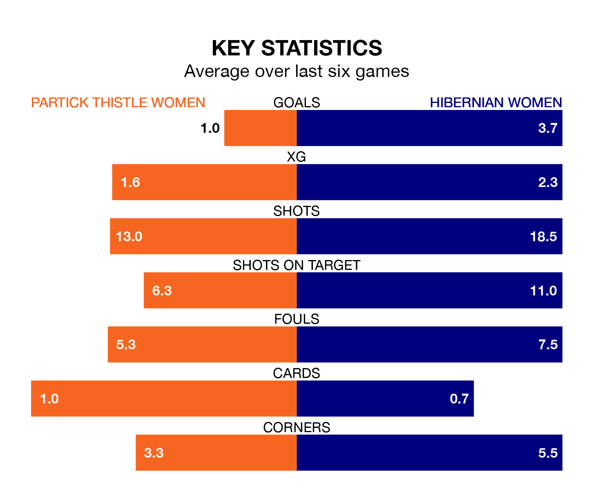

Hibernian Women travel to Petershill Park for Sunday lunchtime's match against Partick Thistle Women looking to bounce back from defeat last time out in SWPL 1.
Hibs, who sit fourth in the league after 20 games, fell to a 3-1 home defeat to Celtic Women on February 11.
They face a Partick Thistle side who secured a draw in their last match, a 0-0 tie with Rangers Women, and who sit fifth in the table.
In Jorian Baucom, Hibernian have the league's sharpest shooter so far this season. She has notched 20 goals in 20 appearances.
Her goal rate of one every 73 minutes is much quicker than that of Cara Henderson, Partick Thistle's top scorer with a goal every 180 minutes, and a total of nine goals in 20 games.
With 59 goals in 20 games so far this season, Hibs are scoring more than average in the league with 3.0 goals per game. And they are conceding fewer than average, letting in 28 goals at a rate of 1.4 per game.
Thistle, meanwhile, are below average scorers, with 1.6 goals per game, compared to a league average of 2.1. They have conceded 1.4 goals per game.
In the last 10 years, Partick Thistle and Hibernian have played each other on nine occasions. Partick Thistle won three of them, Hibernian five, and they drew once.
On average, Thistle scored 1.0 goal and Hibs 1.6 in those matches.
Their last meeting was on January 21, when Partick Thistle won 2-0 at home.
The hosts are in mixed form in SWPL 1, with three wins and a draw from their last six games.
With four wins and two losses over that period, the away team's form is slightly better – they have taken 12 points from 18, compared to Partick Thistle's 10.
Updated: 13:04 (UTC), 16/02/24